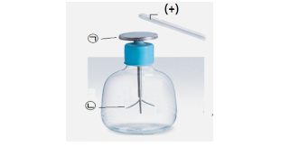

II. 전기와 자기
1. 전기의 발생
1. 마찰하면 생기는 전기
II. 전기와 자기
1. 전기의 발생
2. 가까이 하면 생기는 전기
확인 문제
# 1
tips_and_updates 플라스틱 빗으로 머리를 빗으면 머리카락이 빗에 달라붙는다. 이 현상과 관련하여 두 물질 사이에 이동하여 마찰전기를 띠게 하는 것은?
① 이온
② 원자
③ 전자
④ 원소
⑤ (+)전하
정답 : 3
해설 :마찰전기를 띠게 하는 것은 전자의 이동이다.
출처 : 2021년 1학기 기말고사
# 2
tips_and_updates 실에 매달려 있는 풍선 2개와 털가죽이 있을 때 전기력을 이용하여 두 풍선을 가장 멀어지게 하는 방법은?
① 풍선 2개를 서로 마찰시킨다.
② 한쪽 풍선에 털가죽을 가까이한다.
③ 한 개의 풍선만 털가죽으로 마찰시킨다.
④ 두 개의 풍선을 털가죽으로 마찰시킨다.
⑤ 두 풍선을 마찰시키지 않고 서로 가까이한다.
정답 : 4
해설 : 두 개의 풍선을 털가죽으로 마찰시키면 같은 전하가 유도된 두 풍선에 인력이 작용함.
출처 : 2021년 1학기 기말고사
# 3
tips_and_updates 전기적 현상을 설명한 아래의 글에서 ㉠, ㉡에 들어가기에 가장 알맞은 말은?
마찰한 풍선을 칠판 가까이하면 ( ㉠ ) 현상으로 칠판에 전하가 유도되고, 풍선과 칠판 사이에 ( ㉡ )이 작용하여 풍선이 칠판에 달라붙는다.
| ㉠ | ㉡ | ||
| ① | 마찰전기 | 인력 | |
| ② | 마찰전기 | 척력 | |
| ③ | 옴의 법칙 | 척력 | |
| ④ | 정전기유도 | 척력 | |
| ⑤ | 정전기유도 | 인력 |
정답 : 5
해설 : 마찰한 풍선을 칠판 가까이하면 정전기 유도현상으로 칠판에 전하가 유도되고, 풍선과 칠판 사이에 인력이 작용하여 풍선이 칠판에 달라붙는다.
출처 : 2021년 1학기 기말고사
# 4
tips_and_updates 대전 되지 않은 검전기에 (+)대전체를 가까이할 때 금속판 ㉠과 금속박 ㉡에 유도되는 전하의 종류를 옳게 연결한 것은?

| ㉠ | ㉡ | ||
| ① | (-)전하 | (+)전하 | |
| ② | (+)전하 | (-)전하 | |
| ③ | 중성 | 중성 | |
| ④ | (+)전하 | (+)전하 | |
| ⑤ | (-)전하 | (-)전하 |
정답 : 1
해설 : 대전 되지 않은 검전기에 (+)대전체를 가까이할 때 금속판 (-)전하와 금속박에 (+)전하가 유도된다.
출처 : 2021년 1학기 기말고사